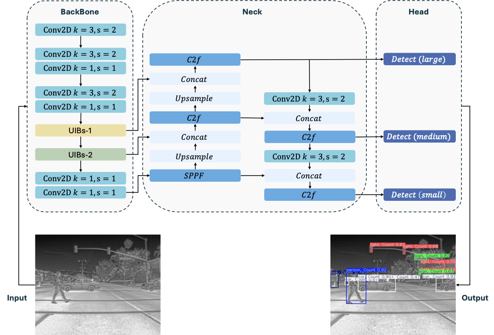
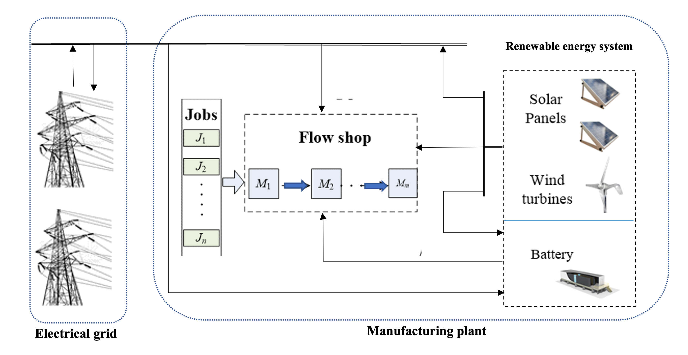
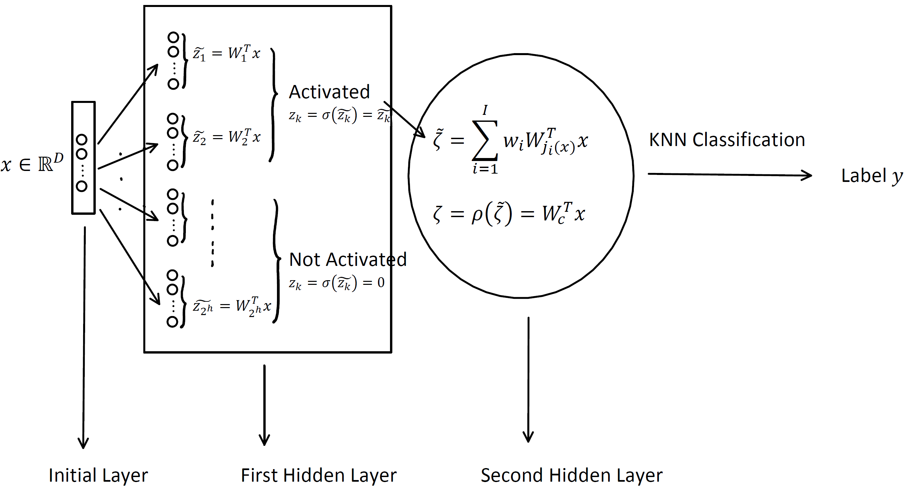

All Research Projects
LLM-Powered Content Recommendation Pipeline
An end-to-end LLM-driven content recommendation system that automates news curation for 100+ users. Features a multi-source data collection layer ingesting 50+ articles daily from 20+ sources with a 4-stage deduplication funnel, an LLM ranking module using Claude API for relevance scoring, summarization, and classification (recall → ranking → re-ranking architecture), and deployment as a daily push service that reduced manual curation effort by 95%.
LLM-based Retrieval-Ranking Pipeline
A two-stage retrieval-ranking pipeline for detecting data references in scientific publications. Combines regex-based candidate extraction with Bayesian filtering for recall, followed by a 32B LLM for semantic classification. Statistical error analysis guided pre/post-processing rule optimization to reduce LLM hallucinations. Achieved top 9% (114/1282) in the Kaggle Make Data Count competition with only 3 submissions.
MS-YOLO: Infrared Object Detection for Edge Deployment

A lightweight object detection model optimized for infrared imaging and edge deployment. The model integrates MobileNetV4 backbone with a novel SlideLoss function to achieve efficient detection performance on resource-constrained devices. This work addresses the critical challenge of deploying deep learning models on edge devices while maintaining high accuracy for thermal imaging applications.
Joint Control of Flowshop Manufacturing and Microgrid Energy Management

An intelligent optimization system that integrates flowshop scheduling with microgrid energy management. The system uses Genetic Algorithms (GA), Reinforcement Learning (RL), and rule-based methods to minimize energy costs by optimally matching production demand with renewable energy supply.
Subspace Indexing Model with Interpolation (SIM-I)

This work addresses the challenge of nonlinear representation learning in high-dimensional data. While classic linear methods (PCA, LDA) fail to capture local variations and nonlinear methods (kernel algorithms, DNNs) are computationally expensive, we propose the Subspace Indexing Model with Interpolation (SIM-I) — a lightweight, locality-aware approach that achieves comparable performance to deep neural networks while maintaining computational efficiency and theoretical interpretability through piecewise linear, globally nonlinear embeddings.